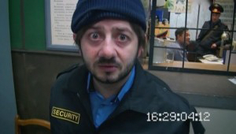

Статьи
Чем занимается служба охраны в питерском метро
Опубликовано 03.02.2012
Ежедневно петербургский метрополитен перевозит сотни тысяч горожан. И, конечно же, в местах столь массового скопления народа обеспечение безопасности — одна из главных задач. Занимаются этим как сотрудники линейных отделов полиции, так и служба контроля метрополитена.
Сотрудников последней легко узнать по темно-синей униформе. Обычно они стоят возле турникетов и, как кажется многим… ничего не делают. Так ли это на самом деле, рассказал охранник метрополитена Андрей, пожелавший остаться инкогнито.
Повышение зарплаты охранникам в 2012 году
Опубликовано 03.02.2012
Частные охранные предприятия (ЧОП) в новейшей истории России стали ее визитной карточкой – охранники в каждом предприятии, торговом центре, учебном заведении и больнице. ФГУП «Охрана», управление вневедомственной охраны, 16 федеральных ведомств со своими собственными подразделениями охраны, 20 000 частных охранных подразделений по всей стране и 4 000 служб безопасности вместе составляют почти миллионную армию вооруженных охранников.
Количество охранников превышает численность сотрудников МВД и немного уступает общему числу военнослужащих Российских вооруженных сил. Кто же контролирует эту вооруженную армаду, живущую за счет богатых предпринимателей и крупных объединений? МВД выдает лицензии, владеет всем оружием ЧОПов и по замыслу закона о частных охранных предприятиях, должно контролировать миллионную армию охранников, среди которых много бывших заключенных, охранников ФСИН, сотрудников спецслужб, МВД, МО и «успешных» бизнесменов.В Приморье треть охранников – непроходимые “двоечники”
Опубликовано 03.02.2012 Встреча полицейских с представителями малого бизнеса – владельцами ювелирных магазинов и ломбардов – состоялась в Приморском УВД первого февраля, ранее сообщало РИА «Дейта».
Объективную оценку качеству предоставления охранных услуг и уровню подготовки кадров дал начальник Центра организации лицензионно-разрешительной работы управления МУВД по Приморскому краю Вячеслав ПРОСТЯКОВ.
Ульяновские охранники – лучшие!
Опубликовано 03.02.2012
На Куйбышевской железной дороге в 2011 году предотвращено 930 хищений на общую сумму 4,9 млн руб.
Филиал федерального государственного предприятия «Ведомственная охрана железнодорожного транспорта РФ» на Куйбышевской железной дороге подвел итоги работы за 2011 год.